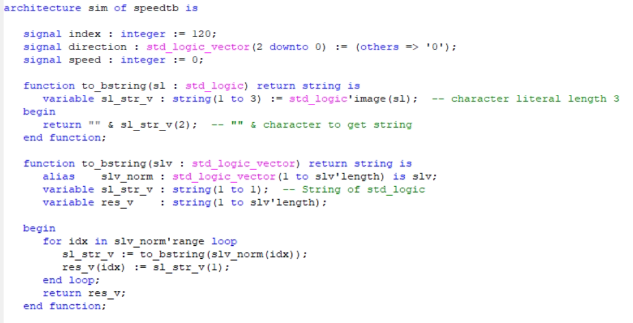
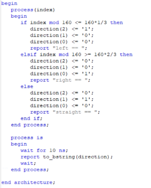
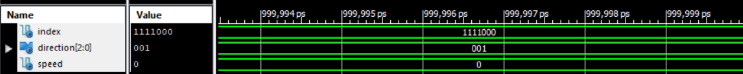

➤ Hasil dan Analisa
Percobaan Pertama
Disini adalah architecture untuk membuat direction. Untuk percobaan pertama ini tidak dibuat implementationnya terlebih dahulu dan langsung dibuat testbench untuk mencoba konsepnya terlebih dahulu.
Konsepnya disini adalah rangkaian menerima input index atau lokasi, dari index tersebut dikalkulasikan. Bila indexnya di kiri layar, maka arahnya akan ke kiri dan begitu juga sebaliknya. Bila indexnya di tengah layar, maka outputnya akan menjadi lurus.
Disini terdapat tiga signal yaitu index, speed dan direction. Index dibuat sebagai input dari komponen light detection. Speed merupakan output untuk kecepatan robot dan direction merupakan output untuk arah robot. Program ini belum di desain untuk menghitung speed dan hanya direction untuk mencoba directionnya terlebih dahulu.
Fungsi to_bstring dirancang untuk mengubah tipe data bit menjadi tipe data string agar dapat di-print.
Disinilah proses architecturenya. Pertama index dibagi dengan letak tengah layer (dalam hal ini 160) untuk mendapatkan sisa dari pembagiannya. Bila sisa baginya melebihi 160/3, maka outputnya akan ke kiri dengan direction(2) = 1 dengan maksud untuk menandakan bahwa itu kiri. Bila sisa baginya melebihi 160*2/3 maka outputnya akan ke kanan dengan direction(0) = 1 dengan maksud untuk menandakan bahwa itu ke kanan. Bila kedua kondisi itu salah, maka dia akan ke tengah.
Inilah hasil dari rangkaian ini. Tetapi kelemahannya program ini hanya dapat mengirim direction secara keseluruhan dan tidak mendeskripsikan duty cycle untuk roda kiri dan kanan. Maka dari itu kita masuk ke percobaan kedua.